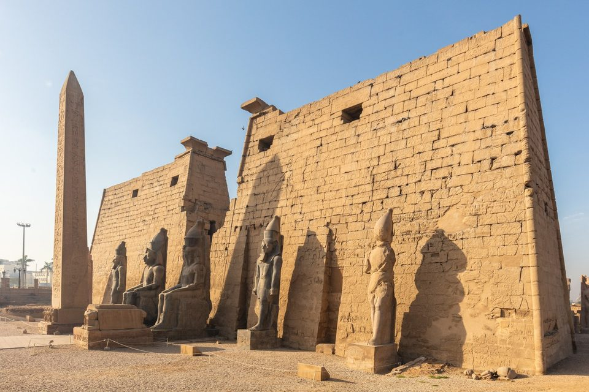

Egypt · Luxor
Luxor Temple audio guide
14 stops · 15 min
Billed in ZAR
Unlocks in this browser after payment.
Amun's southern temple, from pharaohs to a mosque. Listen here, or get the Earwise app to play as you walk.
Stops
- 1
Where the Avenue Meets the Temple
At the north end of Luxor Temple, where the stone avenue reaches the temple front. This is stop 1 on the route.
Play0:00 / –:––Read along
You are on the east bank of the Nile, at the northern edge of Luxor Temple. The ancient Egyptians called it Ipet-resyt, usually translated as "the southern sanctuary", because it stood at the southern end of ancient Thebes, about two point seven kilometres from Karnak.
Most Egyptian temples run east to west, yet this one faces north toward Karnak as the destination of the Opet Festival. Each year, priests carried the divine triad , Amun, Mut, and Khonsu , in procession along this corridor of about two point seven kilometres.
The avenue beside you spans roughly 2.7 kilometres and is lined with stone sphinxes, usually credited to fourth-century BC ruler Nectanebo I over an older route. After decades of excavation and restoration, the walkway reopened in November 2021.
No single pharaoh built this sanctuary. Its earliest surviving chapel belongs to Hatshepsut, around 1473 to 1458 BC, while Amenhotep III raised the main halls and courts.
Tutankhamun and Horemheb finished the festival reliefs, before Ramesses II added the massive entrance pylon. Your walk moves from that gateway inward toward the deepest shrine.
- 2
The Pylon of Ramesses II
Facing the temple's entrance gateway, with its two towers. This is stop 2 on the route.
Script and audio included when you buy - 3
The Obelisk and Its Missing Twin
In front of the pylon, beside the single remaining obelisk. This is stop 3 on the route.
Script and audio included when you buy - 4
The Colossi of Ramesses II
Beside the entrance, near the colossal statues of the king. This is stop 4 on the route.
Script and audio included when you buy - 5
The Great Court of Ramesses II
Inside the open court, past the pylon. This is stop 5 on the route.
Script and audio included when you buy - 6
The Abu al-Haggag Mosque
Below the mosque that sits on the northeast corner of the court. This is stop 6 on the route.
Script and audio included when you buy - 7
The Great Colonnade
At the foot of the Great Colonnade, between the two rows of tall columns. This is stop 7 on the route.
Script and audio included when you buy - 8
The Sun Court of Amenhotep III
In the open court beyond the colonnade, among the double rows of papyrus columns. This is stop 8 on the route.
Script and audio included when you buy - 9
The Luxor Cachette
Near the western side of the Sun Court, where the statues were found. This is stop 9 on the route.
Script and audio included when you buy - 10
The Hypostyle Hall and the Roman Chamber
In the hall of columns, at the doorway to the first room beyond. This is stop 10 on the route.
Script and audio included when you buy - 11
The Hall of Offerings and the Shrine of Alexander
In the inner rooms, facing the shrine within a shrine. This is stop 11 on the route.
Script and audio included when you buy - 12
The Birth Room
In the Birth Room, east of the Hall of Offerings. This is stop 12 on the route.
Script and audio included when you buy - 13
The Sanctuary of Amun
In the rear area of the temple, near the sanctuary. This is stop 13 on the route.
Script and audio included when you buy - 14
The Temple After Dark
Anywhere in the temple as the lights come on. This is stop 14 on the route.
Script and audio included when you buy
On the map
All 14 stop pins for this guide are marked. Open map